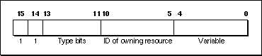

Resource IDs of Owned Resources
Certain types of resources used by system software may have resources of their own in the same resource fork; the "owning" resource consists of code that reads the "owned" resource into memory. For example, a desk accessory might have its own pattern and string resources. This section describes the numbering convention used for owned resources. This information can be useful if you are writing a desk accessory or other driver or special types of definition functions for windows, controls, or menus.You should use the numbering convention described in this section to associate owned resources with the resources to which they belong. This allows resource-copying programs (such as installers) to recognize which additional resources need to be copied along with an owning resource. Figure 1-10 illustrates the ID of an owned resource.
Figure 1-10 Resource ID of an owned resource

Bits 14 and 15 are always 1. Bits 11 through 13 specify the type of the owning resource, as follows:
Type bits Type 000 'DRVR' 001 'WDEF' 010 'MDEF' 011 'CDEF' 100 'PDEF' 101 'PACK' 110 Reserved for future use 111 Reserved for future use Bits 5 through 10 contain the resource ID of the owning resource (limited to 0 through 63). Bits 0 through 4 contain any desired value (0 through 31).
Some types of resources can't be owned because their IDs don't conform to this convention. For example, a resource of type 'WDEF' can own other resources but cannot itself be owned, because its resource ID can't be more than 12 bits long (see the chapter "Window Manager" in Inside Macintosh: Macintosh Toolbox Essentials). The chapters describing individual resources provide detailed information about such restrictions.
An owned resource may itself contain the ID of a resource associated with it. For example, a dialog ('DLOG') resource owned by a desk accessory contains the resource ID of its item list. Although the item list is associated with the dialog resource, it's actually owned (indirectly) by the desk accessory. The resource ID of the item list should conform to the same special convention as the ID of the dialog resource. For example, if the resource ID of the desk accessory is 17, the IDs of both the dialog resource and the item list should contain the value 17 in bits 5 through 10.
A program that copies resources may need to change the resource ID of a resource so as not to duplicate an existing resource ID. Bits 5 through 10 of resources owned, directly or indirectly, by the copied resource should also be changed when those resources are copied. In the example just discussed, if the desk accessory must be given a new ID,
bits 5 through 10 of both the dialog resource and the item list resource should also change.
- WARNING
- When a resource-copying program changes the ID of an owned resource, it should also change the ID where it appears in
other resources (such as an item list's ID contained in a dialog box resource).